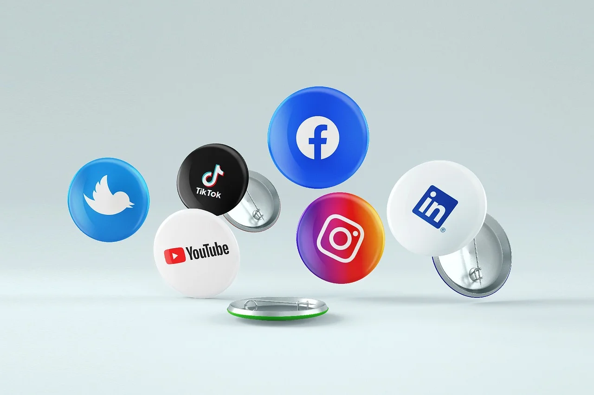

Choisissez selon votre objectif et vos ressources
Retenez un premier réseau sur lequel vos clients sont déjà présents et où vous pouvez publier régulièrement. Le meilleur point de départ dépend du type de contenu, du temps disponible et de l’action attendue du lecteur.
Par Central Web Agency · Mis à jour le

Quel réseau pour quel besoin ?
| Réseau | Contenu et effort à prévoir |
|---|---|
| Instagram ou Pinterest | Montrez un portfolio visuel. Préparez des photos et des descriptions utiles. |
| Expliquez vos services à un public professionnel. Prévoyez du temps pour écrire et répondre. | |
| Partagez des événements ou actualités auprès d’une communauté que vous connaissez. | |
| TikTok | Montrez un geste ou un processus en vidéo courte. Prévoyez du temps pour filmer et monter. |
Évaluez les résultats
Fixez un objectif simple, comme faire consulter une prestation. Sur une période définie, distinguez la portée des publications, les clics vers le site et les demandes réellement reçues. Ces chiffres décrivent des étapes différentes.
Un réseau peut montrer une réalisation et renvoyer vers une page qui précise le service et le contact. Notre article sur l’utilité d’un site professionnel détaille cette complémentarité.